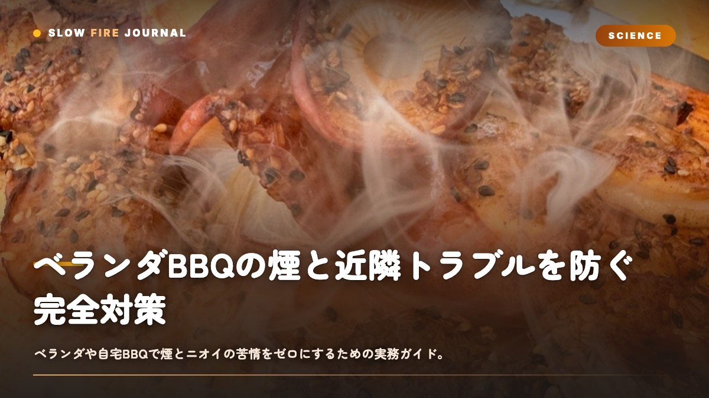

ベランダBBQの煙と近隣トラブルを防ぐ完全対策 — 無煙化と火種管理の実務
ベランダでBBQをしたいけど、お隣さんに迷惑かな……と二の足を踏んでいませんか？実は、ベランダBBQの苦情の8割は「白い煙」と「脂が炭に落ちた瞬間の刺激臭」から出ているんです。煙って、脂が220〜250℃以上で不完全燃焼するときに一番濃くなります。逆に言うと、脂を炭に落とさない構造と、炭をしっかり熾火(おきび)化させる火種管理さえできれば、見た目で分かる煙はほぼ消えてくれるんですよね。この記事では、その仕組みと、立地・時間帯・道具の数値の見きわめまでを、ひととおりお話ししていきます。

結論から言うと、煙は「脂を炭に落とさない」だけで9割消えます
ベランダや自宅の小さなスペースでBBQをやって苦情が来てしまうのは、肉の焼き加減ではなくて、ほとんどが煙とニオイなんですよね。そして煙の正体って、実は2つしかありません。ひとつは炭が燃え切っていない着火直後の不完全燃焼煙、もうひとつは焼いている食材の脂が炭の表面に滴り落ちて一気に焦げる「フレアアップ煙」です。この2つを潰してあげれば、隣のベランダで洗濯物を干している人が気づかないレベルまで落とせます。
具体的な打ち手は3つです。(1)炭をしっかり熾火化(表面が白い灰で覆われた状態)させてから焼く、(2)食材の真下に炭を置かず、脂を落とさない配置にする、(3)煙が出やすい高脂・低温の食材と時間帯を避ける。この順番で組んであげれば、煙突から出るような白煙はまず立ちません。逆に言うと、生炭の上で脂たっぷりの豚バラを直火で焼くのは、ベランダで一番やってはいけない組み合わせなんです。これだけは覚えておいてください。
なぜ煙が出るのか：温度と脂の科学
炭そのものは、完全に燃え切った状態(熾火)になるとほとんど煙を出さないんですよね。赤熱した炭の表面温度はおよそ700〜900℃で、ここまで上がると揮発分はもう飛んでしまっていて、出てくるのは二酸化炭素と、陽炎のような熱気だけです。煙が問題になるのは着火後の最初の10〜20分。炭に含まれる水分と揮発性タール分が350〜500℃の段階で気化して、これが白〜青みがかった煙になるんです。安価な成形炭やオガ炭の一部はこの揮発分が多くて、着火初期の煙が濃くなりがちです。
もうひとつのフレアアップは、温度というより「脂の落下」の問題です。脂(主成分は脂肪酸とグリセリン)は約220℃で煙点を超えて、300℃前後になると激しく分解して油煙を出します。赤熱した炭の表面は前述のとおり700℃以上あるので、滴り落ちた脂は一瞬で発火・炭化して、もうもうとした油煙と強い焦げ臭を放ちます。ベランダBBQで「急に煙が出た」と感じる瞬間って、ほぼ100%これなんです。
煙対策の核心は「炭を燃やし切ること」と「脂を炭に触れさせないこと」。この2点はあくまで焼き方の話で、消臭スプレーや扇風機では根本的には解決しないんですよね。
立地と時間帯：やる前に決める3つの数値基準
道具をそろえるより先に、まず「自分の環境でやっていいのか」を判断してあげてください。集合住宅では規約で火気・BBQが禁止されているケースも多いので、管理規約の確認が大前提です。そのうえで、煙とニオイが届く距離・時間を、下の基準で読んでいきます。
| 判断軸 | OKの目安 | 避ける条件 |
|---|---|---|
| 風速 | 1〜3m/s(煙が水平にゆっくり流れて拡散) | 0m/s(真上に滞留)または5m/s超(火の粉が飛ぶ) |
| 時間帯 | 11:00〜18:00(在宅者・布団干しが少ない) | 早朝6〜9時・夜20時以降(窓を開ける家庭が増える) |
| 隣家との距離 | 隣のベランダまで3m以上+風下に窓なし | 隣の窓・換気口が2m以内かつ風下 |
風向きは無料の天気アプリで当日の風向を確認して、自分のベランダから見て隣家の窓が風上側にある日を選びます。煙が隣の洗濯物に向かう日は、どんなに無煙化しても微量のニオイで苦情につながってしまうんですよね。判断に迷うなら、その日は無理せずカセットコンロのグリラーに切り替えるのが賢いです。
具体的手順：白煙を出さない火種管理と焼き方
1. 炭を完全に熾火化させる(着火〜20分)
煙の半分は、じつは着火の段階で出ています。チャコールスターター(煙突型着火器)に炭を入れて着火剤で点火したら、15〜20分そのまま放置してください。炭の表面の7割以上が白い灰で覆われたら、熾火完成のサインです。この状態になるまでは食材を絶対に乗せないこと。生炭の上で焼き始めると、揮発分の煙と脂の油煙が同時に出て、いちばん煙が立つコンディションになってしまいます。
ベランダなら炭の量は500g〜800g(握りこぶし4〜6個分)もあれば十分です。たくさん入れるほど火力は上がりますが、その分だけ煙も増えて近隣リスクが高まります。少量を熾火化して使い切る——これがベランダの鉄則なんですよね。煙の少なさで選ぶなら、揮発分が少なくて爆ぜにくい備長炭やオガ備長炭(白炭系)が有利です。黒炭やマングローブ炭は着火は早いんですが、初期煙が多めです。
2. ツーゾーンで脂を落とさない配置にする
炭を片側半分だけに寄せるツーゾーンファイアを組みます。脂の多い食材は炭のない側(間接ゾーン)に置いて、脂は下のトレーやアルミに落とし、炭には触れさせないようにしてあげてください。直火が必要なときも、焼き色をつける最後の30秒〜1分だけ炭側に移せばOKです。これだけでフレアアップ煙はほぼ消えてくれます。
さらに確実にしたいなら、炭と食材の間にアルミのドリップトレーを挟むか、30分ほど水に浸した杉板(シダープランク)に食材を乗せて焼くのがおすすめです。杉板は脂を完全に受け止めて、煙ではなく木の良い香りだけを出してくれます。サーモンや崩れやすい食材には、特に有効ですよ。
3. 煙が出にくい食材・温度を選ぶ
ベランダでは、脂の滴下が少なくて低温で焼ける食材を選ぶと、煙がぐっと減ります。
| 食材 | 推奨温度 | 中心温度/時間 | 煙リスク |
|---|---|---|---|
| 鶏むね | 200〜220℃間接 | 中心73℃/20〜25分 | 低(脂少) |
| シダープランクサーモン | 200〜230℃ | 中心53℃/8〜12分 | 低(板が脂を受ける) |
| 豚肩ロース厚切り | 200〜220℃間接 | 中心63℃/25〜40分 | 中(間接なら可) |
| 野菜(パプリカ・玉ねぎ) | 200℃前後 | 15〜20分 | 最低 |
| 豚バラ・脂身肉を直火 | — | — | 高(避ける) |
ラブ(乾燥スパイス)を使う場合も、砂糖を含むラブは直火で焦げて煙の原因になってしまうので、たっぷり振ったら必ず間接ゾーンで焼いてあげてください。Low n Slow BasicsやButcher's Axeのような配合の深いラブは、低温の間接でこそ香りが立つので、無煙化との相性もいいんです。
よくある失敗と回避
- 生炭で焼き始める → 着火直後の白煙が一気に出ます。20分待って、白い灰を確認してから乗せましょう。
- 脂の多い肉を直火に置く → フレアアップ煙が立ちます。間接ゾーンかドリップトレーで脂を逃がしてあげてください。
- 炭を入れすぎる → 火力が強すぎて食材が焦げ、煙とニオイが増えます。500〜800gに抑えましょう。
- うちわで強くあおぐ → 灰が舞って、炭が再び不完全燃焼して煙が出ます。あおぐのは着火初期だけにしてください。
- 消火を水でやる → 蒸気と灰が大量に立って、最後に一番のニオイ被害が出ます。火消し壺で密閉消火しましょう。
- 夜にやる → 窓を開ける家庭が増えて、煙も滞留しやすくなります。日中、風1〜3m/sの時間帯に。
トラブルシュート：それでも煙・ニオイが出たら
| 症状 | 原因 | 対処 |
|---|---|---|
| 急に白い油煙 | 脂が炭に落下しフレアアップ | 食材を間接側へ即移動。炭側に塩や少量の水でなく、トレーで脂を遮断 |
| ずっと薄い煙が続く | 炭が熾火化しきっていない | 食材を一度外し、炭の灰化を5〜10分待つ |
| 焦げ臭が強い | 砂糖入りラブが直火で炭化 | 間接ゾーンに移し、表面のラブが焦げていれば軽く払う |
| 火の粉が飛ぶ | 風速5m/s超または黒炭が爆ぜている | 中止判断。白炭に切り替えるか日を改める |
もし苦情が来てしまったら、その場で焼くのをいったん止めて、後日きちんと謝罪し、以後の時間帯や頻度を伝えるのが最善です。火気を扱う以上、ご近所との関係をこじらせてしまうと、次が一切できなくなりますからね。
バリエーション：火を使わない/さらに無煙化する選択肢
どうしても煙が許されない立地なら、無理に炭にこだわらなくて大丈夫です。電気グリル(IRグリル系)は炭の初期煙がゼロで、脂の落下対策さえすればベランダでも十分に実用的です。風味は炭に少し劣りますが、ラブとスモークパウダーを併用すれば、ある程度は補えますよ。
炭の香りを残しつつ無煙化したいなら、蓋付きのケトルグリル(Weber等)で完全に蓋を閉めて間接調理するのが、いちばん効果的です。蓋の中で煙が燃焼して循環するので、外に漏れる煙がぐっと減ります。少量のスモークウッド(10g程度)を熾火に乗せれば、香りは残しつつ煙は薄いまま。ベランダで本格的な香りを狙うなら、この「少量炭+蓋閉め間接」が、現状のベストバランスだと思います。
よくある質問
ベランダBBQで一番煙が出やすい食材は何ですか？
脂身の多い豚バラ・牛カルビを直火で焼くのが最悪です。脂が220℃を超えて炭(700℃以上)に滴ると激しい油煙が出ます。鶏むね・サーモン・野菜など脂の少ない食材を間接ゾーンで焼けば煙はほぼ出ません。
煙を出さないために炭はどれを選べばいいですか？
揮発分が少なく着火後の初期煙が少ない備長炭・オガ備長炭などの白炭系がおすすめです。黒炭やマングローブ炭は着火が早い反面、最初の10〜20分の白煙が多くなります。量は500〜800gに抑え、必ず白い灰で覆われた熾火状態にしてから焼き始めてください。
マンションのベランダでBBQをしても法的に問題ありませんか？
多くのマンションは管理規約でベランダでの火気使用やBBQを禁止しています。まず規約を確認してください。許可されている場合でも、風1〜3m/sで隣家の窓が風上にある日中を選び、煙とニオイを最小化する配慮が必須です。